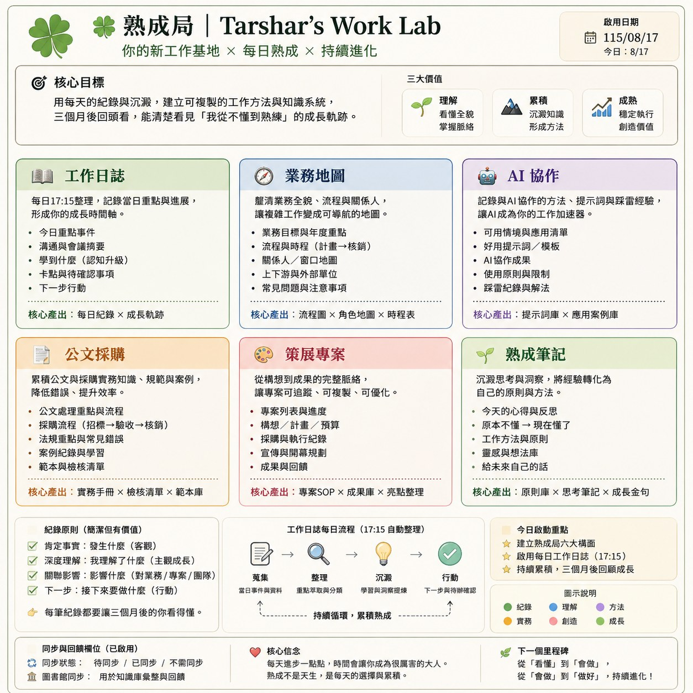

我進新單位一個多月，手上同時開著 ChatGPT、Claude、Notion、雲端硬碟、程式庫。工具越開越多，我怕的其實只有一句話：「我記得做過，但不知道最後版本在哪裡。」
所以我開了一間「熟成局」——一個專門放工作思考的聊天室，名字是我自己取的，取「熟成」是因為新工作的每一件事，都需要時間才會變成我真的懂的東西。
本來以為今天的任務是「整理資料要放哪」。結果一整天下來，我真正做的是另一件事：把判斷權從 AI 手上拿回來。
我請 AI 幫我確認一套資料管理架構會不會跟現有的方式打架。它讀完我的知識庫，第一句話是：
我的知識庫裡真的有一份《資料位置共識》，七月底就寫好、兩個 AI 都覆核過，狀態停在「待我確認」——然後被我忘了三個星期。而且它比我後來看到的新建議還完整。
這件事本身就很諷刺：我怕資料散落，結果最先散落的是我自己訂的規則。它躺在正確的位置、格式正確、內容正確，只差一個我的簽名。
整套架構九成都對得上，唯一真正缺的一塊是「公務資料邊界」。我換了工作，規則還停在上一個我。
AI 寫出來的第一版我看了就知道不能用。條條都對，但我在機關上班，那些條文的意思等於「你什麼都別問」。我回它一句：
它承認第一版寫太硬，然後給了我今天最有用的一個工具——把兩件事分開看：
分開之後，規則從「不准」變成「可以，但怎麼做」。這才是我要的東西。
分層之後，剩下的就好處理了。我把它收成兩個問題、三盞燈：
差別長這樣：「我這件核銷為什麼被退？」不行，就算拿掉案號還是我們機關的具體案件；「一般核銷退件常見原因有哪些？」可以，而且答案一樣有用。
這套東西我今天順手做成了一份教案放上網站，公部門的朋友可以直接拿去用，裡面有法源、有去識別化的六個動作、也有我自己踩線的那一次。
規則訂好之後，我還是覺得哪裡怪。因為 AI 開始幫我判斷「這個類別可不可以碰」，連我的論文、我的品牌線，它都要分類一下。
我停下來，打了一段話給它：
它承認越線了，把整套規則改寫。分工現在只剩兩行：
我為什麼在意這件事到要吵一架？因為如果連我自己用的 AI 都先幫我畫一堵牆，那我等於在替一個我要推動的東西示範「它很難用」。
我後來去查了資料，發現「規則跟現實對不上」這件事，不是只有我在遇到。
「78% 使用 AI 的人是自己帶工具進辦公室的（BYOAI）——在中小型企業更普遍，達 80%。」（78% of AI users are bringing their own AI tools to work (BYOAI)—it's even more common at small and medium-sized companies (80%).）
— Microsoft ＆ LinkedIn《2024 Work Trend Index Annual Report》 微軟官方報告頁我的回應：這個數字說明一件事——員工不會等組織想清楚。他們手上有事情要做，就會找工具。所以組織能決定的其實不是「員工要不要用」，只是「他們是在明處用，還是在暗處用」。
「在上面沒有給出指引或許可的情況下，員工會自己想辦法，並且把 AI 的使用藏起來。」（Without guidance or clearance from the top, employees are taking things into their own hands and keeping AI use under wraps.）
— 同上，Microsoft WorkLab 微軟官方報告頁我的回應：「藏起來」這三個字才是真正的風險。一個把規則訂到沒人做得到的組織，得到的不是零使用率，是零能見度——大家照樣用，只是你不知道誰在用、用在哪、貼了什麼出去。這比公開的、有邊界的使用危險太多了。所以我今天那句「一條做不到的規則比沒有規則更糟」，不是在替自己找方便，是真的比較安全。
吵完兩次、規則訂完，熟成局才真的成形。它有六個構面：工作日誌、業務地圖、AI 協作、公文採購、策展專案、熟成筆記。

熟成局的全貌。六個構面各有自己的核心產出，底下那條「蒐集 → 整理 → 沉澱 → 行動」才是讓它不會變成流水帳的關鍵。（點圖可放大）
但真正讓它動起來的是一條每天跑的迴路：
設定這個排程的時候還踩到一個坑，值得講：我第一次在錯的地方建，平台直接回警告說那個環境接不到 Notion。如果沒發現，它會每天準時執行、每天什麼都沒做，而且不會有人通知我。
後來改到對的地方建，順手還把不需要的權限砍掉——設定畫面預設幫我掛了四個連接器（信箱、日曆、雲端硬碟、筆記），這個任務只用得到一個。用不到卻掛著，等於白白開了三扇門。
我原本以為今天是在確認一份架構建議能不能用。後來發現我真正在做的是兩件事：把七月就寫好卻忘了簽名的規則拿回來，還有在 AI 想替我畫界線的時候，把筆收回自己手上。
如果你也剛換工作、或剛開始把 AI 放進日常，我會建議三件事：
Tarshar，淡江 EMBA 資管研究生，AI 課程講師。在經營「🍀Learn AI with Tarshar」，記錄一個非工程師怎麼把 AI 變成日常隊友，也記錄自己怎麼在職涯轉彎的路上，一邊走一邊把想通的事情寫下來。